Disbudding is the removal of the horn buds of a young calf before the horns grow. Dehorning is the removal of horns that have already grown on an older animal. Both are done for the same reason: horns injure people, wound other cattle, break fences and cause injuries that become infected.
This guide covers the three main methods — hot-iron, chemical and surgical — the best age for each, pain management, complications and wound care, so farmers and veterinary students can understand the complete procedure.
Why Remove Horns?
Horns are natural, but on a working farm they cause real problems. Removing them — or better, preventing them from growing — makes the herd safer and easier to manage.
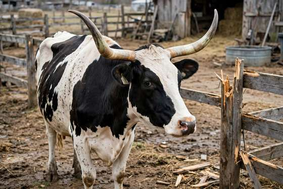
Large horns injure people, cattle and fences
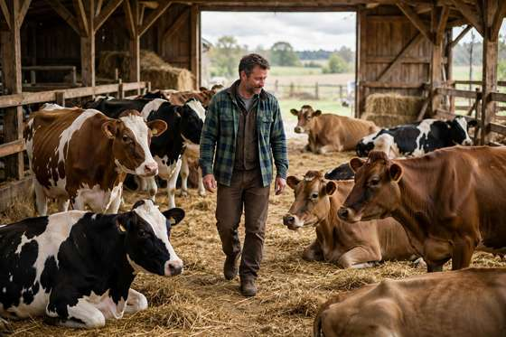
A polled herd — safe to walk among
1
Safety for people(Horned cattle injure farmers, children and veterinarians every year)
2
Less injury in the herd(Horned cows wound each other, causing abscesses and udder injuries)
3
Easier handling and transport(Polled cattle need less space and are calmer in crushes and trucks)
4
Less damage to facilities(Horns break fences, feeders and crushes)
5
Better market value(Many buyers prefer polled or dehorned cattle)
6
Fewer horn injuries(Broken horns bleed heavily and are painful to treat)
Methods — Hot-Iron Disbudding, Step by Step
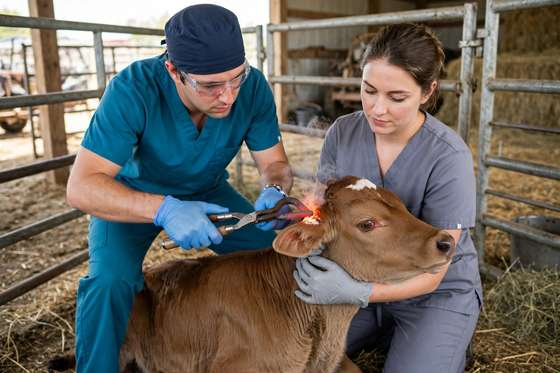
Hot-iron disbudding — the standard method for calves
1
Check the calf's age(Best at 2–8 weeks, when the horn buds are still free-floating under the skin)
2
Sedate and numb(Cornual nerve block with local anaesthetic; sedation as decided by the veterinarian)
3
Restrain the calf(Calf held gently on its side or in a calf crush)
4
Heat the iron(Electric disbudder heated until the tip glows evenly)
5
Apply to each bud(Iron held on the horn bud for about 10–15 seconds until a copper-coloured ring appears; the bud is removed)
6
Wound care(Antiseptic applied; the calf is watched for bleeding and returned to its mother)
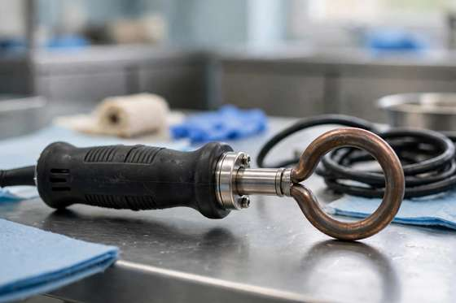
The electric hot-iron disbudder
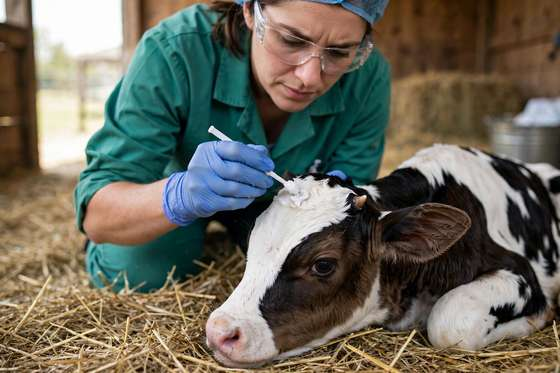
Chemical paste — for calves under 2 weeks
Chemical Disbudding
Caustic paste (sodium or calcium hydroxide) is applied to the horn buds of calves under one to two weeks old. It destroys the horn-producing cells without heat. It needs care: the paste burns skin, must not run into the eyes, and the calf must be kept away from its mother and rain until the paste dries. Because of these risks, many veterinarians prefer the hot iron.
Surgical Dehorning — Older Animals, Step by Step
Once horns have grown and attached to the skull, removing them is a surgical operation through bone. It is always done by a veterinarian, under anaesthesia, with the animal firmly restrained.
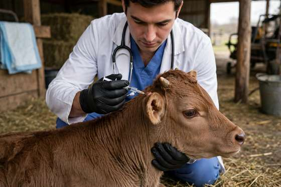
Cornual nerve block — numb before cutting
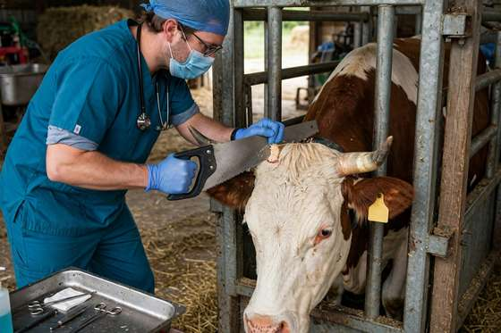
Surgical dehorning of an adult cow
1
Restrain in a crush(Adult cattle must be firmly restrained; sedation is used)
2
Cornual nerve block(Local anaesthetic on both sides; wait for full effect)
3
Cut the horn(Barnes dehorner, saw or embryotomy wire removes the horn with a ring of skin)
4
Control bleeding(Vessels are tied or cauterised; the frontal sinus is exposed in adults)
5
Dress the wound(Antiseptic, wound powder and a protective bandage)
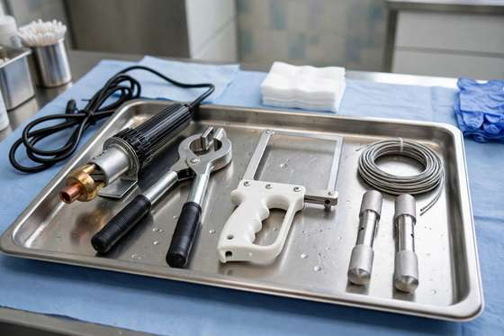
The dehorning kit — disbudder, Barnes dehorner, saw and wire saw
Best Age — The Timeline
The horn bud is free under the skin for the first weeks of life and only attaches to the skull at about 8 weeks. Disbudding before this age is quick and simple. After attachment, removing the horn means surgery through the skull — a bigger, riskier operation. Plan disbudding into the calf-rearing calendar.
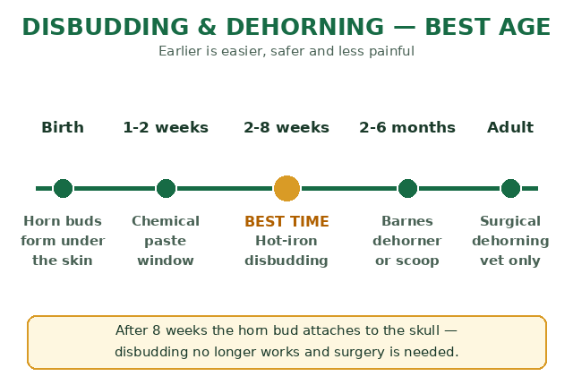
Disbud early — 2 to 8 weeks is the best window
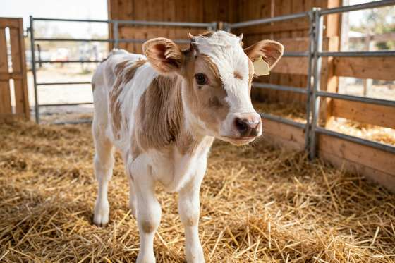
A young calf — the horn buds are easy to feel
Pain Management
Disbudding and dehorning are painful without anaesthesia. Modern veterinary practice always combines a cornual nerve block (local anaesthetic, lidocaine) with sedation and an anti-inflammatory painkiller such as meloxicam, given before the procedure. Calves that receive pain relief eat, drink and grow better afterwards. Never disbud or dehorn without anaesthesia.
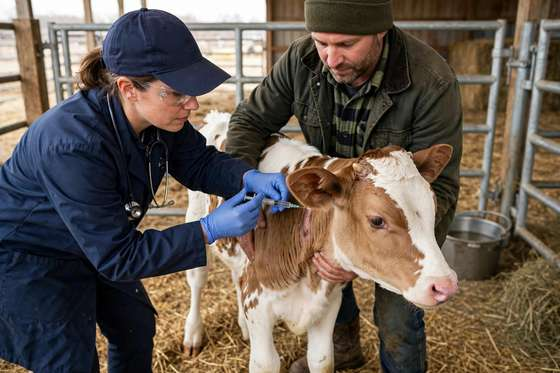
Pain relief after disbudding — calves recover faster
Complications and Wound Care
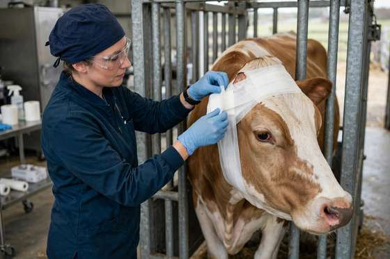
Clean dressing after dehorning surgery
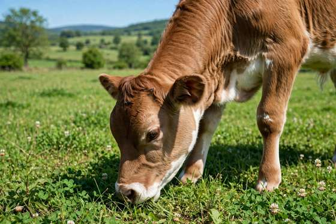
A healed poll — smooth, healthy, horn-free
1
Bleeding(Commonest after surgical dehorning; controlled by ligation or cautery)
2
Infection(Swelling, discharge or smell at the wound; needs veterinary treatment)
3
Sinusitis(Infection of the frontal sinus after adult dehorning — discharge from the wound or nose)
4
Regrowth of horns (scurs)(Happens if horn-producing tissue is left behind; a second procedure may be needed)
5
Brain or eye injury(Rare, from an iron held too long or too deep, or chemical paste running into the eyes)
6
Fly strike(Flies lay eggs in open wounds in warm weather — use repellent and check daily)
Precautions and Field Guidelines
Important: Disbudding and dehorning are surgical procedures and must be performed by a qualified veterinarian under proper anaesthesia and aseptic conditions. Never attempt them at home — unskilled work causes severe pain, heavy bleeding, infection and permanent injury.
⚠ Important Tips:
Disbud early (2–8 weeks) — never wait for horns to grow.
Always use a nerve block plus pain relief.
Consider polled (naturally hornless) genetics to avoid the procedure altogether.
Avoid fly season for adult dehorning.
Check wounds daily for at least a week after the procedure.
Keep records of age, method and medicines used.
Frequently Asked Questions
What is the difference between disbudding and dehorning in cattle?
Disbudding removes the horn buds of a young calf before the horns grow, usually with a hot iron or caustic paste. Dehorning removes horns that have already grown on an older animal, using a dehorner, saw or wire. Disbudding is quicker, simpler and less painful; dehorning is a bigger surgical procedure.
What is the best age to disbud a calf?
The best age for hot-iron disbudding is 2 to 8 weeks, when the horn bud is still free under the skin. Chemical paste is used even earlier, in the first one to two weeks of life. After about 8 weeks the horn bud attaches to the skull, so disbudding no longer works and surgical dehorning is needed.
Which disbudding method is best — hot iron or chemical paste?
Most veterinarians prefer the hot iron: it is quick, reliable and the result is visible at once. Chemical paste works without heat but can run into the eyes, burn other skin, and needs the calf kept dry and away from its mother until the paste dries. Both methods need local anaesthesia and pain relief.
How is pain controlled during disbudding and dehorning?
Modern practice always combines a cornual nerve block (local anaesthetic, lidocaine) with sedation and an anti-inflammatory painkiller such as meloxicam, given before the procedure. Calves that receive pain relief eat, drink and grow better afterwards. Disbudding or dehorning must never be done without anaesthesia.
What are the complications of dehorning in cattle?
The main complications are bleeding, wound infection, sinusitis after adult dehorning, regrowth of horns (scurs) when horn tissue is left behind, fly strike in open wounds, and rarely brain or eye injury from an iron held too long or chemical paste running into the eyes. Early disbudding avoids most of these risks.
Does disbudding hurt the calf?
Without pain relief, yes — disbudding is painful. With a proper nerve block and painkiller, the calf feels very little during the procedure and recovers quickly. Always ask your veterinarian for full pain relief before disbudding or dehorning.
Can horns grow back after disbudding?
Yes — if any horn-producing tissue is left behind, a deformed horn called a scur can grow back. This is more common with chemical paste or an iron that was not hot enough. A scur can usually be removed later by the veterinarian.
بچھڑے کے سینگ کب اور کیسے ختم کرنے چاہییں؟
بچھڑے کے سینگ 2 سے 8 ہفتے کی عمر میں گرم لوہے (ہاٹ آئرن) سے ختم کرنا سب سے بہتر ہے، جب سینگ کی جڑ ابھی ہڈی سے جڑی نہیں ہوتی۔ یہ کام ہمیشہ مستند ڈاکٹر سے کروائیں جو بے ہوشی اور درد کی دوا دے۔ بڑی عمر میں سینگ کاٹنا بڑا آپریشن ہوتا ہے اور اس میں خون بہنے اور انفیکشن کا خطرہ زیادہ ہوتا ہے۔
Key Takeaway
The best dehorning is early disbudding: a short hot-iron procedure at 2–8 weeks with proper pain relief. Waiting until horns have grown turns a small job into major surgery. Where possible, breeding polled cattle removes the need for the procedure entirely. Follow current local veterinary authority guidance.